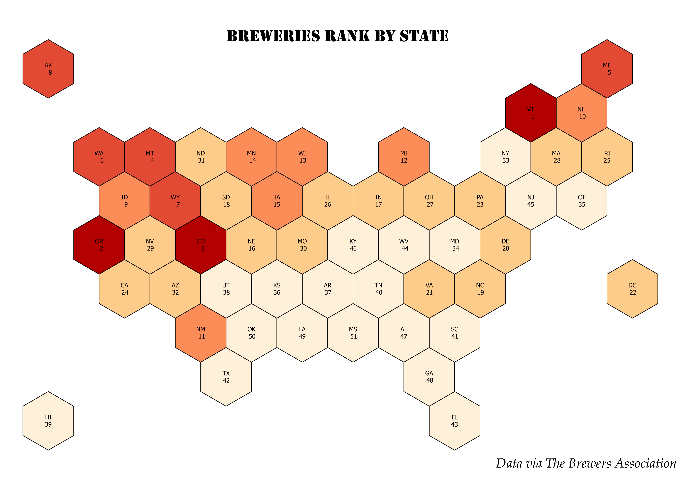
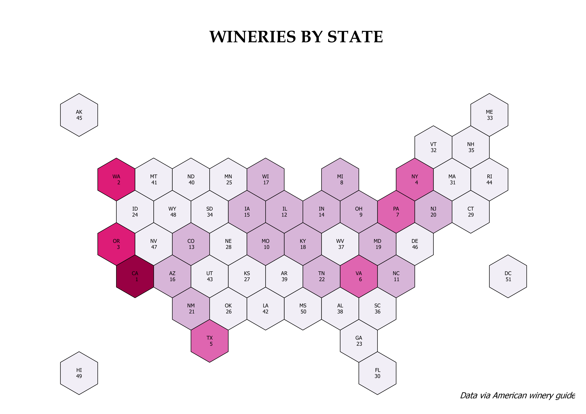
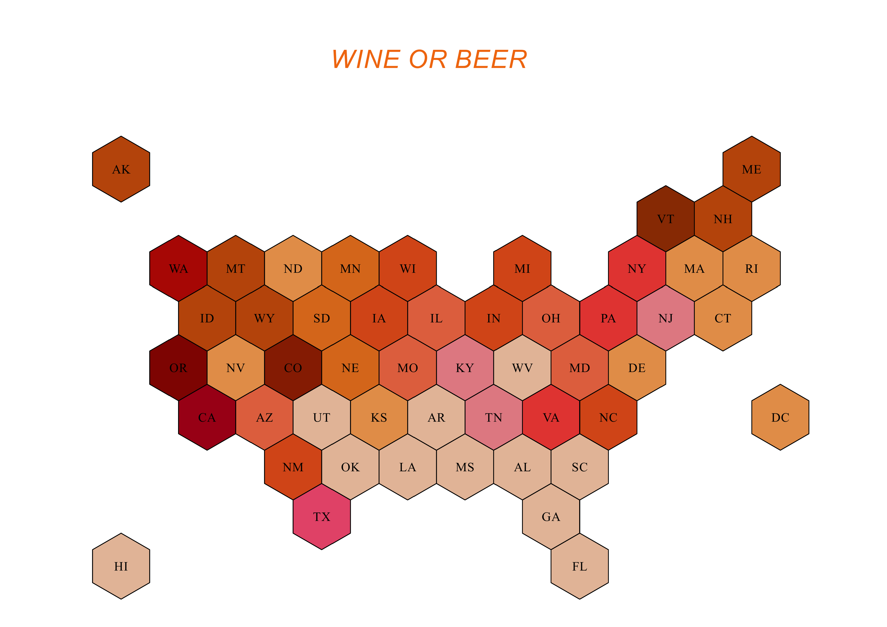

When you think about Texas, the first thing that would come in mind is barbecue which of course pairs well with a good beer. In this post I have mapped each state in the
US ranked based on the breweries or wineries present. I got the data from the Brewers Association and the American Winery Guide. With data visualization being so
important in representing the dataset I have used hexbins shapefile from
Don Meltz's repo.
Below are the maps for how the states are ranked .


